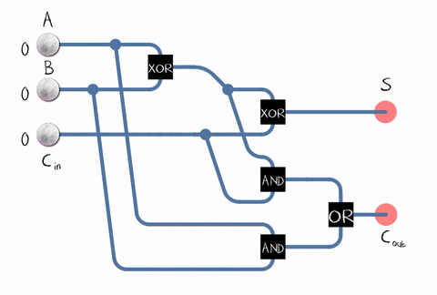

Processors

Processors do math using adders and two's compliment to make negative numbers.
This circuit adds binary numbers and carries the remainder off to the next adder.

Two's Compliment
The two's complement of a binary number takes half the bits and treats them like negative values. Using this method, we can use a Full Adder circuit on negative numbers giving us subtraction. Addition in sets = multiplication and subtraction in sets gives us division, giving a full set of mathematics.
Eight-bit two's-complement integers
| Bits |
Unsigned
value |
Two's
complement
value |
| 0111 1111 |
127 |
127 |
| 0111 1110 |
126 |
126 |
| 0000 0010 |
2 |
2 |
| 0000 0001 |
1 |
1 |
| 0000 0000 |
0 |
0 |
| 1111 1111 |
255 |
-1 |
| 1111 1110 |
254 |
-2 |
| 1000 0010 |
130 |
-126 |
| 1000 0001 |
129 |
-127 |
| 1000 0000 |
128 |
-128 |
Next Page: System Terminology